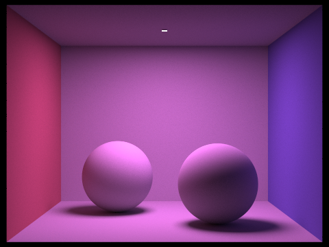
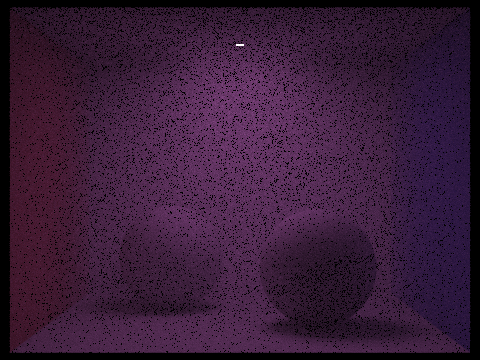
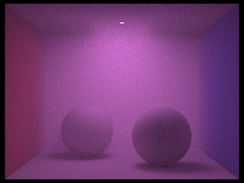
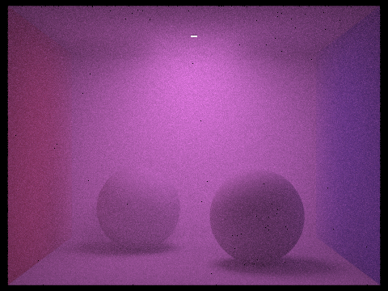
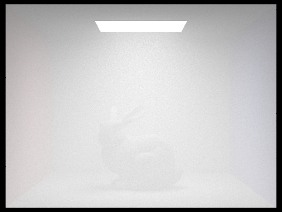

Abstract
In this project we aimed to render scenes that contain participating media such as fog, smoke, or dust. Previously we implemented a pathtracer that assumes that light only scatters upon intersection with a surface. Our resulting images therefore replicate environments where objects are embedded in a vacuum. However in reality, impurities and microscopic particles exist within the space between objects. Since even clean air scatters light, it is important for us to accurately simulate how light behaves.
We would need to render images with a volumetric scattering effect where rays sometimes scatter before hitting a surface. This involves implementing a more complex version of irradiance, extinction, and absorption coefficients, and implementing a phase function, which defines the distribution of the direction in which light scatters.
Techincal Approach
Summary
Before writing any code, we first made sure to read through Wojciech Jarosz's thesis to get a basic understanding of the problem and high-level idea of how to solve it.
One of our initial ideas involved representing each particle as its own object in the lighting simulation. However, after reading Wojciech Jarsoz's thesis, we realized that
if we assumed that the microscopic particles are distributed uniformly throughout the medium we would be able to simulate the behavior probabilistically.
The general idea is that as a light ray passes through our medium, it has a chance of interacting with a particle. If it doesn't interact with the particle, the renderer should behave normally as before. If an interaction does occur, the light ray hitting the particle will either absorb or scatter. In the case of absorption, the particle completely absorbs the light ray resulting in a loss of radiance.
However if it scatters, we use a phase function to determine the angular distribution of scattering. Depending on the type of particle it can scatter light equally in all directions or can have a bias and have a higher chance of scattering in a forwards or backwards direction.
In Project 3-1, we implemented a function that traces rays for each pixel to render our image as part of our Pathtracer. As it computes the global illumination for each ray, it considers the effect of both zero bounce lighting and lighting caused by multiple bounces. Our goal here is to include the effect of intersection with fog/smoke/dust particles while computing the radiance from multiple bounces. This involves the following steps in our algorithm:
- We use two coefficients and a bias as inputs for our pathtracer: the scattering coefficient σs, the absorption coefficient σa, and the bias k.
Their sum σs+σs would be our extinction coefficient.
These coefficients depend on the nature of the environment in which our objects are embedded.
The greater the fog, the greater the extinction coefficient.
On the other hand, the bias k∈[-1,1] corresponds to the bias in forward or backward scattering: +1 corresponding to complete forward scattering and -1 corresponding to complete backward scattering.
- We first compute the distance of the ray from its light source to the nearest surface using our previously implemented primitive intersection algorithms. This returns a float t.
- We then generate a random float r1∈ [0,1] and compute the distance the ray travels before interacting with fog/smoke/dust to be d = -logr1 / (σs+σs)
- We compare the two distances t and d. If the former is larger, we continue with our algorithm as if the ray has intersected with fog/smoke/dust. Otherwise, we compute the illumination for this ray assuming no interaction with fog/smoke/dust, that is, as our algorithm worked previously in 3-1.
- If t > d then we compute the probability of absorption, that is, whether our ray gets absorbed by the fog/smoke/dust hence terminating it on its path. We generate another random float r2∈ [0,1] and compare this with σs / σs+σs, that is, the ratio of the scattering coefficient to the extinction coefficient. If the former is larger the ray gets absorbed. Otherwise, the ray gets scattered. In the case where the light is absorbed, we return the illumination of the ray from the bounces so far and stop our recursive algorithm for computing the radiance.
- In the case when light gets scattered, that is when r2 <= σs / σs+σs, we need to compute the direction in which the ray is scattered. We get a distribution for this direction using the Schlick Phase function, a faster approximation for the Henyey-Greenstein function. For each scattering angle and bias k we get the pdf = (1-k2) / (4π(1+ kcosθ)2). We implemented a sampler function for this distribution called SchlickWeightedSampler3D under Sampler3D and sampled a 3D vector using this sampler. This became our scattering direction.
- We also adjusted the illumination to be using complete reflectance in case the ray interacts with fog/smoke/dust, hence completing our algorithm.
Problems we encountered
The first problem we encountered after our initial renders was that we saw that the fog was not correctly scattering light and was as a result not very bright. We realized that this was a problem with how we implemented the logic for when we terminate the ray from intersecting with the scene anymore. Before we would only continue if the ray would intersect with an object in the scene, however we didn’t consider if the ray would intersect a fog particle. Consequently, the rays were terminating too early and the scene was darker than it should have been. To fix this we check if the ray intersects an object or a fog particle, if so then we continue intersecting the ray with the scene. This made it so that we were able to see the fog much better in the renders.
Another problem that we faced are the appearance of black dots. Most of the black dots were because we were simply terminating the light ray by
returning L_out for our absorption case. By returning the one bounce radiance instead, we were able to reduce the number of black dots significantly. However, there are still
some black dots that remain during some of our renders and we believe this may be because of how we calculate reflectance for fog or due to floating point errors.
Lessons Learned
After completing this project, we realized that there is a lot of work that goes into creating realistic renderings. The idea of rendering tiny particles in the air is something that most people would never think about and would probably go un noticed. However when comparing images with and without our new volumetric scattering feature, there is a significant difference that creates a very realistic effect. We've definitely begun to appreciate the little details within renderings and are now more aware of them within the media that we look at.
Results
Through some trial and error, we were able to find a good combination of absorption and scattering. Having too much absorption would mean that light would
a difficult time getting through the air and hitting primitives resulting in an overall darker image. Too much scattering would make the image too blurry and would
also result in more noise.
The difference between forward and backward scattering is not as apparent. If you look closely, you can see that the image with backward scattering has a slightly brighter ceiling.
This is because as the light source directs light downwards, the particles' backwards scattering bias give it a higher chance for light to scatter back towards the light.
The first 6 images are each rendered using 1024 samples per pixel and 32 samples per area light. Every image generated has a max ray depth of 10.
|

No Participating Media
|
Default Fog Setting σa = 0.1, σs = 0.3
|
|

High Absorption σa = 0.3, σs = 0.3
|
High Scattering σa = 0.1, σs = 0.5
|
|

Forward Scattering k = 0.5
|

Backward Scattering k = -0.5
|
|
4096 samples/pixel 64 samples/light σa = 0.1, σs = 0.3 k = 0.2
|

Very Foggy Bunny
|
References
Wojciech Jarosz's Thesis for Basic Concept
Lafortune and Willems for Implementation Details
Reference Photos
Contributions from Each Team Member
When it came to implementation, troubleshooting, or any other general work, we spent nearly the entirety of this project working together as a group in person or over zoom.
Below are some more detailed and specific contributions from each of us.
Shrihan Agarwal
Suhrid Saha
Nate Dyre
Alan Chiem